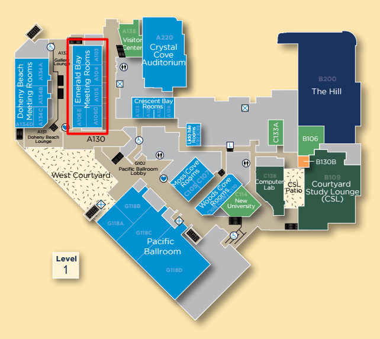
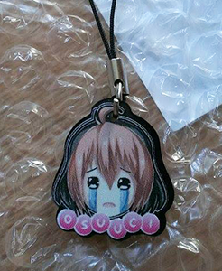
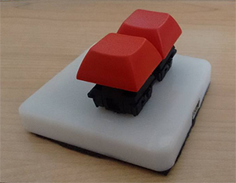

|
 |
osu! UCI is excited to host its first osu! LAN at UCI this fall quarter. Over the event, we'll be hosting casual lobbies and streaming all day, in addition to a managing a tournament for players. This is a live BYOC(Bring Your Own Computer) event, so make sure to bring all your necessary gadgets and accessories.
The OFL takes place on Sunday November 22nd, 2015 from 9AM to 9PM PST/GMT-8. We are located in the Emerald Bay Meeeting Rooms in the UCI Student Center, full address: 311 W Peltason Dr, Irvine, CA 92697. Food is not provided at the event, but there are plenty of chains and restaurants in walking distance around the area. All-day parking is available in the adjacent Student Center Parking Structure for $10.
Emerald Bay Rooms in the Student Center
To help cover rental costs for the event, we are charging a $5 entrance fee for tournament entrants. If you are here to simply spectate or to play in our casual lobbies, you do not need to pay. We accept payment in-person or through PayPal. Extra cash will be put into the prizing for the Master's division first place prize.
In addition, please fill out this Google form so we can better organize you in the tournament and reach you in case of an emergency.
Phase 1
Phase 2
osu! supporter will be given out, provided by the help of the osu! staff (thanks!). We'll be giving out osu! UCI merchandise, mainly in the form of our cute charms that we've made last year. Aaron has also been kind enough to also donate a few of his two-K keyboards that he personally built himself for the top 4 placers. Finally, the top Master player will receive a cash prize for the money left over from our tournament entrance fees. Prizings are subject to change.
Charms
Aaron's two-K keyboard
LAN rules and structure are subject to alterations by the administrators. Administrators have the final say in disputes.
To be finalized.
To be decided.
Two map pools will be used - one for Swiss and another for the top 8 single elimination.
| Mod | Title | Artist | Difficulty | Stars | Length |
| Double Time | Koi Yuki | Silent Siren | Yuki | 4.85 | 3:25 |
| Double Time | Saturday Night | Crayon Pop | Hard | 4.93 | 2:02 |
| Double Time | Tear Rain | cYsmix feat. Emmy | Insane | 5.01 | 2:41 |
| Double Time | Clover | Duca | Collab | 5.02 | 2:39 |
| Double Time | Melancholic | Tianshi | Rin | 5.08 | 2:23 |
| Hard Rock | Blueberry Train | Uchida Aya | Insane | 4.86 | 3:36 |
| Hard Rock | ChaiN De/structioN | Hatsune Miku | Loneliness | 4.87 | 3:15 |
| Hard Rock | Sekai de Hitotsu no Takaramono | Boku wa Piacere! | Insane | 4.93 | 2:30 |
| Hard Rock | Idola No Circus | Himeringo | Expert | 4.96 | 3:28 |
| Hard Rock | Summer Time Music | Hana & X-Plorez | Insane | 4.97 | 4:13 |
| Hidden | Red Signal | Hanatan | Insane | 4.89 | 4:13 |
| Hidden | Daisy | Lifetheory | Blossom | 4.92 | 1:53 |
| Hidden | Killer Song (Short Ver.) | yanaginagi | Insane | 4.92 | 2:13 |
| Hidden | Gold Dust | DJ Fresh | Insane | 4.93 | 3:01 |
| Hidden | Wahrheit | Yousei Teitoku | Revelation | 5.02 | 4:42 |
| No Mod | Chikyuu Saigo no Kokuhaku o | yuikonnu | Laurier's Insane | 4.93 | 3:59 |
| No Mod | Once Again | Tristam | Collab | 4.98 | 3:33 |
| No Mod | Rashisa | Super Beaver | deetz' MANDOM | 5.09 | 4:20 |
| No Mod | Kunoichi demo Koi ga Shitai | yuikonnu & ayaponzu* | Insane | 5.1 | 3:51 |
| No Mod | Artcore JINJA | An | Lunatic | 5.01 | 2:12 |
| Tiebreaker | Hoshi Ga Matataku Konna Yoru Ni | supercell | Starlight | 5.27 | 4:24 |
| Mod | Title | Artist | Difficulty | Stars | Length |
| Doubletime | Sentimental Love | mimimemeMIMI | Insane | 5.34 | 3:04 |
| Doubletime | Torinoko City | Hanatan | Insane | ||
| Doubletime | My Truth Rondo Capriccioso | Taneda Risa | April | 5.51 | |
| Doubletime | Koyoi Index | senya | Lunatic | 5.68 | 2:27 |
| Doubletime | Miren | Chata | Insane | 5.26 | 2:37 |
| Hard Rock | The Pink Fields | Doxx & Feint | Divine | 5.76 | 1:39 |
| Hard Rock | MORE&MORE | Toyosaki Aki | Insane | 3:38 | |
| Hard Rock | REANIMATE | Warak | Mythol's Extra | 5.67 | 2:30 |
| Hard Rock | Plazma | Halozy | Nightmare | 5.65 | 5:37 |
| Hard Rock | Crayon | bibuko | Crayon | 5.51 | 2:23 |
| Hidden | Responsibility Response | Yonezawa Madoka | Pathetique | 5.5 | 3:36 |
| Hidden | Flicker | Porter Robinson | fufufu | 5.36 | 4:31 |
| Hidden | Asymmetry | Reol | P A N's Extra | 5.49 | 4:10 |
| Hidden | Colorful(Asterisk Remix) | Sawai Miku | Megumi | 5.18 | 5:11 |
| Hidden | In the Garden | Primary | Ha-N | 5.17 | 3:37 |
| No Mod | Gigantic O.T.N | Wotamin | S.S | 5.77 | 2:55 |
| No Mod | Rally Go Round | LiSA | Extra | 5.44 | 4:18 |
| No Mod | Toumei Elegy | Konuko | Rizawa's Couple Extra | 5.81 | 3:19 |
| No Mod | Asu No Yozora No Shoukaihan | Orangestar | iyasine_sk's Extra | 5.67 | 2:52 |
| No Mod | Omega Rhythm | Uplift Spice | Extra | 5.47 | 2:57 |
| Tiebreaker | Streaming Heart | Reol | CRN's Extra | 6.31 | 2:57 |
If you have any questions, comments, or concerns, feel free to message any one of the osu! UCI officers, send an email to osuuci@gmail.com, or Tweet at us.